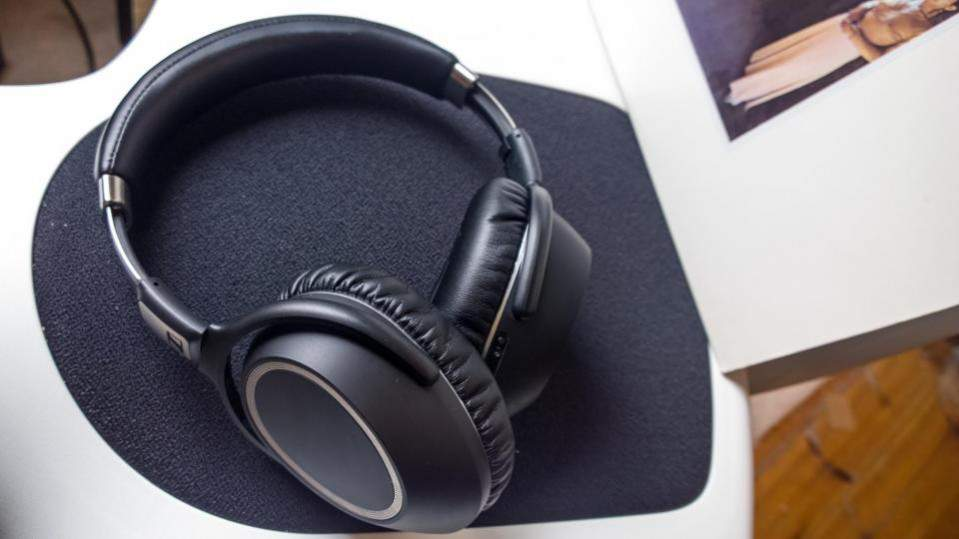

5 Headphone Dengan Fitur Noise Cancelling Terbaik Untuk Traveler
ditulis oleh Agung Nugraha. pada 21 agustus 2018.
Ketika berpergian dengan pesawat, tentu kita ingin merasa nyaman selama dalam penerbangan. Untuk menghindari kebisingan suara mesin atau pun percakapan orang sekitar, biasanya kita mendengarkan lagu atau pun menonton film dengan menggunakan headphone. Namun sayangnya, kadang headphone yang digunakan tetap tak bisa menangkal kebisingan karena tidak dilengkapi fitur noise cancelling. Seperti diketahui, fitur noise cancelling dapat membantu kita terhindar dari kebisingan yang ada di area sekitar tempat kita berada. Dengan menggunakan noise cancelling headphone, mendengarkan lagu atau menonton film terasa lebih nyaman dan juga tenang karena tidak ada suara luar yang menggangu pendengaran kita. Headphone semacam ini menjadi sangat tepat digunakan pada saat penerbangan. Jika Anda belum memiliki headphone dengan fitur noise cancelling, kami rekomendasikan beberapa headphone yang cukup populer. Memang agak mahal, namun sebanding dengan kenyamanan yang akan Anda dapatkan. Berikut 5 headphone yang bisa kamu beli dipasaran untuk kenyamanan Anda dalam pesawat.
1.Sony WH-1000XM2
Headphone keluaran Sony yang satu ini dilengkapi fitur touch & swipe yang cukup responsif. Kualitas suara yang jernih dan baterai yang tahan lama sangat cocok untuk Anda yang punya rute penerbangan jauh. Anda pun bisa terhindar dari kebosanan yang menjenuhkan. Harga yang kompetitif serta kualitasnya, membuat Sony WH-1000XM2 diklaim sebagai headphone terbaik di kelasnya.
2.Bose QuietComfort 35 II
Jika Anda memiliki budget lebih, coba saja tinjau lebih jauh spesifikasi Bose QuietComfort 35 II. Dengan harga dikisaran Rp 5 jutaan saat ini, Bose menjanjikan suara jernih dan lapang karena headphone ini memiliki fitur noise cancelling terbaik di kelasnya. Hanya cukup dengan perintah suara, Anda bisa memaksilkan segala fitur yang tersedia karena headphone ini sudah dilengkapi Google Asisten.
3.Plantronics BackBeat Pro 2
Noise cancelling headphone terbaik lainnya, yakni Plantronics BackBeat Pro 2 yang cukup terkenal dikalangan audiophiles, meski diakui, mungkin beberapa dari Anda belum pernah mendengar merek Plantronics. Harganya relatif murah, masuk dalam jajaran headphone dengan fitur noise cancelling dua jutaan rupiah. Headphone dengan desain yang kokoh ini tetap terasa nyaman digunakan karena busanya yang tebal. Untuk urusan kualitas suara pun cukup baik mengingat harga yang ditawarkan.
4.Sennheiser PXC 550 Wireless
Tentu saja Anda familiar dengan merek headphone populer yang satu ini. Alternatif pilihan headphone dengan fitur noise cancelling yang kami rekomendasikan adalah tipe PXC 550 Wireless. Kualitas suaranya tak kalah bagus dengan headphone lain yang kami rekomendasikan. Dengan respon frekuensi 20Hz sampai 20kHz membuat suara yang dihasilkan akan sejernih kristal. Selain itu headphone ini pun sangat nyaman untuk digunakan berkat busa yang empuk. Fitur noise cancelling-nya pun berhasil menyaring suara dari luar.
5.Bowers & Wilkins PX
Headphone perdana dengan fitur noise cancelling dari Bowers & Wilkins juga tak kalah apik untuk mengusir kebisingan luar. Bukan hanya kenyamanan yang Anda dapatkan, namun desain mewahnya juga. Dilengkapi memory foam sebagai bantalan membuat kuping Anda tidak cepat terasa pegal apabila mendengarkan musik selama berjam jam. B&W PX hadir dalam dua pilihan warna yaitu space gray yang sporty, dan soft gold yang elegan. Meskipun wireless, semua headphone di atas juga dilengkapi dengan kabel AUX dan USB. Jika Anda berpergian dengan pesawat yang dilengkapi dengan konsol inflight entertainment via kabel AUX maupun USB, semisal maskapai Batik Air, tentu Anda bisa menghubungkan headphone dengan konsol tersebut. Dijamin, lamanya waktu penerbangan Anda tidak akan terasa karena kenyamanan yang diberikan oleh kelima headphone yang kami rekomendasikan di atas.